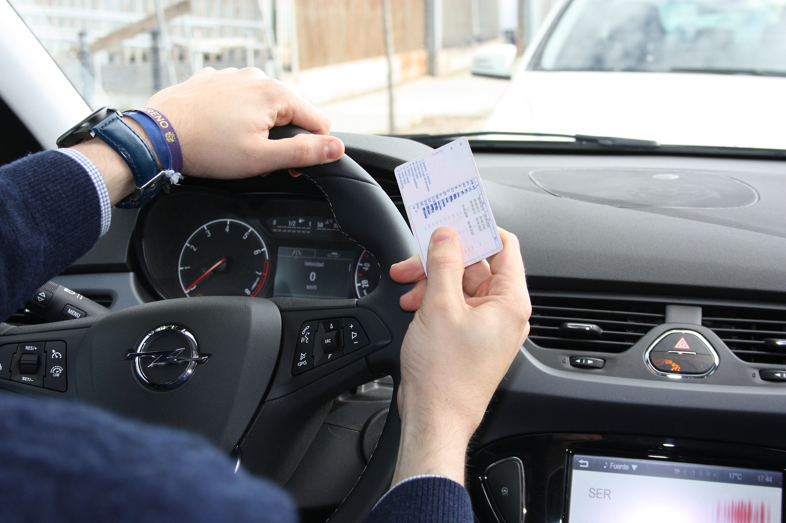

Renovación del carnet de conducir en Asturias en 2026: guía completa
Actualizado para 2026 · Tiempo de lectura: 6 min

Renovar el carnet de conducir es uno de esos trámites que aparece cada cierto tiempo y que, si vives en Asturias, puedes resolver en menos de media hora sin tener que pedir cita ni ir a la Jefatura de Tráfico. En esta guía repasamos todo lo que necesitas saber para 2026: cuándo te toca renovar, qué documentación llevar, cuánto cuesta y dónde puedes hacerlo en Asturias.
1. ¿Cuándo me toca renovar?
La vigencia del carnet depende de tu edad y del tipo de permiso. La regla general es la siguiente:
- Permisos AM, A1, A2, A, B y B+E: 10 años si tienes menos de 65; 5 años desde los 65.
- Permisos C, D, BTP y similares: 5 años hasta los 65; 3 años desde los 65.
Puedes anticiparte y renovar hasta 3 meses antes de la fecha de caducidad sin perder vigencia. Si tu carnet ya está caducado, sigues pudiendo renovarlo, aunque no podrás conducir hasta tener el provisional.
2. Qué necesitas llevar
- DNI, NIE o pasaporte en vigor.
- Carnet de conducir actual.
- Gafas o lentillas si las usas.
- NO necesitas foto: te la hacemos en el momento, digital y gratis.
3. Qué incluye el reconocimiento
El reconocimiento médico-psicológico evalúa las capacidades psicofísicas necesarias para conducir con seguridad: capacidad visual y auditiva, exploración cardiovascular y locomotora, pruebas psicotécnicas (atención, coordinación, tiempo de reacción) y un cuestionario de salud. Está regulado por el Anexo IV del Reglamento General de Conductores.
4. ¿Cuánto cuesta en 2026?
El precio del reconocimiento varía ligeramente entre centros pero suele estar entre los 40 y los 60 € para permisos AM-A-B y entre 50 y 70 € para los profesionales (C, D, BTP). A eso hay que sumar la tasa correspondiente de la DGT (consulta tasas actualizadas en sede.dgt.gob.es). Para confirmar el precio exacto en tu caso, llámanos al 985 059 067 (Gijón) o 984 019 079 (Oviedo).
5. Dónde renovarlo en Asturias
En Asturias dispones de Centros de Reconocimiento de Conductores (CRC) homologados por la DGT. Renova Express cuenta con dos centros, ambos integrados en Centros Comerciales:
- Gijón: Carretera AS-II, 1306 (CC Ronda Roces). Tel. 985 059 067.
- Oviedo: C/ General Elorza, 75 (CC Salesas, planta 0). Tel. 984 019 079.
6. ¿Y si tengo alguna patología?
El Anexo IV del Reglamento contempla cómo proceder con patologías comunes (diabetes, hipertensión, problemas cardíacos, etc.). Lo importante es aportar los informes médicos del especialista: en la mayoría de casos, el reconocimiento se realiza con normalidad y, en algunos, la vigencia del carnet se ajusta a un periodo más corto.
7. El día del trámite, paso a paso
- Llegas al centro (sin cita).
- Te identificas con tu DNI o NIE.
- Realizamos el reconocimiento médico (15-20 min).
- Te hacemos la fotografía digital.
- Tramitamos telemáticamente tu solicitud con la DGT.
- Sales con el permiso provisional. El definitivo llega por correo en 2-4 semanas.